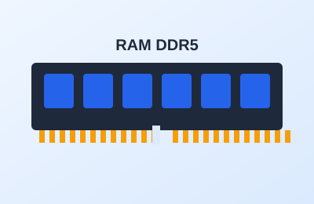

Tema 2 de 5
La memoria RAM: el espacio de trabajo

Descripción
La memoria RAM es el espacio donde tu computador guarda, de forma temporal, los programas y datos que estás usando en este momento. Cuando apagas el equipo, su contenido se borra.
Para estudiar o programar, 16 GB es un buen punto de partida. Si instalas dos módulos iguales en lugar de uno, la placa puede usarlos en doble canal y trabajar más rápido.
Datos clave
- Capacidad: 8 GB mínimo, 16 GB recomendado.
- Tipo: DDR4 o DDR5, debe coincidir con la placa madre.
- Doble canal: dos módulos iguales rinden mejor que uno.
Cómo se instala
- Abre las pestañas de los zócalos de memoria.
- Alinea la muesca del módulo con la del zócalo.
- Presiona en ambos extremos hasta oír el clic.